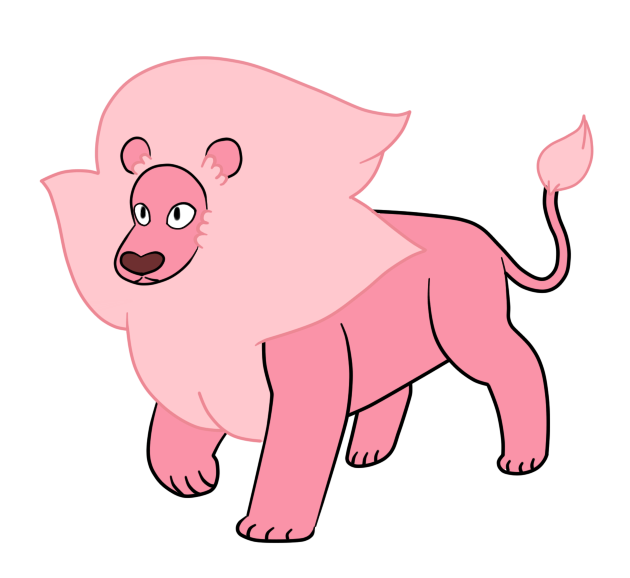

My Homepage

Steven Universe
에 등장하는 사자입니다.
다른 등장인물들
스티븐
펄
가넷
자세한 등장인물들 보기
Steven Universe 방영정보
한국 카툰네트워크 더빙판 방송 목록
방송기간
시간
화수
2019.11.07 ~ 2020.03.27
(목) 08:00, 19:00
(금) 08:00, 21:00
(토) 09:00, 19:00
78
2021.07.08 ~ 08.28
매주 목, 금 21:00
24
2021.10.20 ~
매주 수, 목 21:00
미정